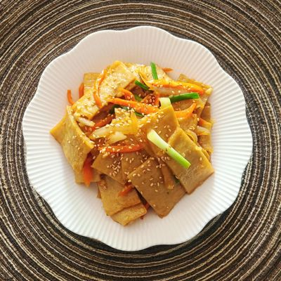

Photo: Zayed Ahmed Zadu / Unsplash
갈릭치킨볶음밥Garlic Chicken Fried Rice
15분 · 1구 가능 · 레벨 2 · 볶기 · 수솊이 도와줄 순간 3번15 min · 1 burner OK · Level 2 · stir-fry · Mitzy helps at 3 moments
밥 1공기, 치킨 2~3조각, 양파 ¼개, 마늘 3쪽, 식용유 2숟가락, 소금 ⅓숟가락1 bowl rice, 2–3 pieces chicken, ¼ onion, 3 garlic cloves, 2 tbsp cooking oil, ⅓ tbsp salt
순서 보기Steps
- 기름 2숟가락, 약불로 마늘 볶기2 tbsp oil, fry garlic on low heat
믿쥐가 색을 봐줄게요Mitzy will watch the color
보는 것: 마늘 가장자리가 연한 금색Watches for: Garlic edges turn pale gold
“마늘이 연한 금색이에요. 이제 양파 넣어요.”“Garlic's pale gold. Add the onion now.”
- 양파 넣고 투명해질 때까지 볶기Add onion, cook until translucent
- 치킨 넣고 겉 데우기Add chicken, sear the outside
믿쥐가 뒤집을 때를 봐줄게요Mitzy will tell you when to flip
보는 것: 치킨 아랫면 튀김옷 색이 진해짐Watches for: Underside of the chicken coating darkens
“아래가 다시 바삭해졌어요. 한 번 뒤집어요.”“The bottom's crisp again. Flip it once.”
- 밥 넣고 눌러 펴서 볶기Add rice, press flat and fry
믿쥐가 눌어붙기 전에 알려줄게요Mitzy will warn you before it sticks
보는 것: 팬 바닥에서 타닥 소리가 커짐, 밥알 가장자리 갈색Watches for: Crackling gets louder, rice edges brown
“바닥이 눌기 직전이에요. 한 번 뒤섞어요.”“It's about to stick. Toss it once.”
- 소금 ⅓숟가락으로 간하기Season with ⅓ tbsp salt

Photo: Jay Nlper / Unsplash
마늘볶음밥Garlic Fried Rice
10분 · 1구 가능 · 레벨 1 · 볶기 · 수솊이 도와줄 순간 2번10 min · 1 burner OK · Level 1 · stir-fry · Mitzy helps at 2 moments
밥 1공기, 마늘 5쪽, 식용유 2숟가락, 간장 ½숟가락, 계란 1개 (선택), 대파 약간 (선택)1 bowl rice, 5 garlic cloves, 2 tbsp cooking oil, ½ tbsp soy sauce, 1 egg (optional), A little green onion (optional)
순서 보기Steps
- 찬 팬에 기름과 마늘 넣고 약불로 켜기Put oil and garlic in a cold pan, then turn on low heat
- 마늘이 금색이 될 때까지 볶기Fry until the garlic turns golden
믿쥐가 색을 봐줄게요Mitzy will watch the color
보는 것: 마늘이 금색, 기포가 잦아듦Watches for: Garlic is golden and the bubbling slows
“지금 금색이에요. 더 가면 써져요.”“It's golden now. Any longer and it turns bitter.”
- 밥 넣고 눌러 펴서 볶기Add rice, press flat and fry
믿쥐가 눌어붙기 전에 알려줄게요Mitzy will warn you before it sticks
보는 것: 타닥 소리가 커짐Watches for: Crackling gets louder
“눌기 전에 섞어요.”“Toss it before it sticks.”
- 팬 가장자리에 간장 ½숟가락 둘러 눌리기Drizzle ½ tbsp soy sauce around the edge of the pan
- 계란후라이를 올려 마무리 (선택)Top with a fried egg (optional)

Photo: Daniel / Unsplash
치킨 양파볶음Chicken & Onion Stir-fry
10분 · 1구 가능 · 레벨 1 · 볶기 · 수솊이 도와줄 순간 2번10 min · 1 burner OK · Level 1 · stir-fry · Mitzy helps at 2 moments
치킨 4~5조각, 양파 ½개, 간장 1숟가락, 설탕 ½숟가락, 식용유 1숟가락, 청양고추 1개 (선택)4–5 pieces chicken, ½ onion, 1 tbsp soy sauce, ½ tbsp sugar, 1 tbsp cooking oil, 1 chili pepper (optional)
순서 보기Steps
- 기름 두르고 중불에서 양파 볶기Oil the pan, stir-fry the onion on medium heat
- 치킨 넣고 한 면 데우기Add chicken, warm one side
믿쥐가 뒤집을 때를 봐줄게요Mitzy will tell you when to flip
보는 것: 아랫면 튀김옷이 다시 바삭, 색이 진해짐Watches for: Coating on the underside crisps up and darkens
“이제 뒤집어요. 한 번이면 돼요.”“Flip it now. Just once.”
- 섞어둔 소스 붓고 빠르게 섞기Pour in the sauce and toss quickly
믿쥐가 불 줄일 때를 알려줄게요Mitzy will tell you when to turn down the heat
보는 것: 소스가 바글바글 끓기 시작Watches for: Sauce starts bubbling
“소스가 끓어요. 불 줄이고 섞어요.”“The sauce is boiling. Turn it down and toss.”
- 소스가 거의 졸면 불 끄기Turn off the heat when the sauce is almost gone

Photo: sheri silver / Unsplash
양파 수프Onion Soup
25분 · 1구 가능 · 레벨 2 · 볶기 · 끓이기 · 수솊이 도와줄 순간 2번25 min · 1 burner OK · Level 2 · stir-fry · simmer · Mitzy helps at 2 moments
양파 1개, 버터 1조각(10g), 물 300ml, 간장 ½숟가락, 소금 약간, 후추 약간, 식빵 1장 (선택), 슬라이스 치즈 1장 (선택)1 onion, 1 pat butter (10 g), 300 ml water, ½ tbsp soy sauce, A pinch of salt, A pinch of pepper, 1 slice bread (optional), 1 slice cheese (optional)
순서 보기Steps
- 버터 녹이고 중약불로 양파 볶기Melt butter, cook the onion on medium-low heat
- 양파가 갈색이 될 때까지 계속 볶기Keep cooking until the onion turns brown
믿쥐가 색을 봐줄게요Mitzy will watch the color
보는 것: 양파가 진한 갈색, 바닥에 갈색 막Watches for: Onion is deep brown, brown film on the pot
“이 갈색이 맛이에요. 바닥에 물 조금 부어 긁어요.”“That brown is the flavor. Add a splash of water and scrape the bottom.”
- 물 300ml, 간장 넣고 끓이기Add 300 ml water and soy sauce, bring to a boil
믿쥐가 끓어 넘치기 전에 알려줄게요Mitzy will warn you before it boils over
보는 것: 냄비 가장자리 거품이 올라옴Watches for: Foam rises at the edge of the pot
“끓기 시작했어요. 약불로 줄여요.”“It's boiling. Turn it down to low.”
- 약불로 10분 끓이고 소금·후추로 간하기Simmer 10 min on low, season with salt and pepper
- 식빵·치즈 올려 마무리 (선택)Top with bread and cheese (optional)

Photo: herry shani / Unsplash
계란볶음밥Egg Fried Rice
10분 · 1구 가능 · 레벨 1 · 볶기 · 수솊이 도와줄 순간 3번10 min · 1 burner OK · Level 1 · stir-fry · Mitzy helps at 3 moments
밥 1공기, 계란 2개, 대파 ¼대, 식용유 2숟가락, 간장 ½숟가락, 소금 약간1 bowl rice, 2 eggs, ¼ green onion, 2 tbsp cooking oil, ½ tbsp soy sauce, A pinch of salt
순서 보기Steps
- 기름 두르고 약불로 파 볶아 파기름 내기Oil the pan, fry green onion on low heat for scallion oil
믿쥐가 색을 봐줄게요Mitzy will watch the color
보는 것: 파 가장자리가 노릇해지기 직전Watches for: Green onion edges just about to brown
“파가 노릇해지기 직전이에요. 계란 부어요.”“Almost golden. Pour in the egg.”
- 계란 붓고 반쯤 익으면 바로 밥 넣기Pour in the egg, add rice as soon as it's half set
믿쥐가 다 됐을 때 알려줄게요Mitzy will tell you when it's done
보는 것: 계란이 반쯤 몽글, 아직 촉촉Watches for: Egg is half set, still wet
“반만 익었을 때 밥 넣어요. 지금이에요.”“Add the rice while it's half cooked. Now.”
- 밥을 눌러 펴며 섞어 볶기Press the rice flat and stir-fry
믿쥐가 눌어붙기 전에 알려줄게요Mitzy will warn you before it sticks
보는 것: 타닥 소리가 커짐Watches for: Crackling gets louder
“눌기 전에 뒤섞어요.”“Toss it before it sticks.”
- 간장 ½숟가락, 소금으로 간하기Season with ½ tbsp soy sauce and salt

Photo: Emanuel Ekström / Unsplash
김치볶음밥Kimchi Fried Rice
15분 · 1구 가능 · 레벨 1 · 볶기 · 수솊이 도와줄 순간 3번15 min · 1 burner OK · Level 1 · stir-fry · Mitzy helps at 3 moments
밥 1공기, 김치 한 줌(⅓컵), 식용유 1숟가락, 고춧가루 ½숟가락 (선택), 설탕 ⅓숟가락, 참기름 ½숟가락, 계란 1개 (선택), 스팸 ¼캔 (선택)1 bowl rice, A handful of kimchi (⅓ cup), 1 tbsp cooking oil, ½ tbsp chili flakes (optional), ⅓ tbsp sugar, ½ tbsp sesame oil, 1 egg (optional), ¼ can Spam (optional)
순서 보기Steps
- 기름 두르고 중불로 김치와 설탕 볶기Oil the pan, stir-fry kimchi and sugar on medium heat
믿쥐가 색을 봐줄게요Mitzy will watch the color
보는 것: 김치가 투명해지고 가장자리가 살짝 진해짐Watches for: Kimchi turns translucent, edges darken slightly
“김치가 투명해졌어요. 밥 넣을 때예요.”“Kimchi's translucent. Time for the rice.”
- 고춧가루 넣고 10초만 볶기Add chili flakes and fry for just 10 sec
믿쥐가 불 줄일 때를 알려줄게요Mitzy will tell you when to turn down the heat
보는 것: 고춧가루가 기름에 닿아 색이 짙어짐Watches for: Chili flakes darken as they hit the oil
“고춧가루는 금방 타요. 불 줄여요.”“Chili flakes burn fast. Turn it down.”
- 밥 넣고 눌러 펴서 볶기Add rice, press flat and fry
믿쥐가 눌어붙기 전에 알려줄게요Mitzy will warn you before it sticks
보는 것: 타닥 소리가 커짐Watches for: Crackling gets louder
“바닥이 눌기 직전이에요.”“The bottom's about to stick.”
- 불 끄고 참기름 둘러 섞기Turn off the heat, drizzle sesame oil and mix
- 계란후라이 올리기 (선택)Top with a fried egg (optional)

Photo: Junel Mujar / Unsplash
제육볶음Spicy Pork Stir-fry
20분 · 1구 가능 · 레벨 2 · 볶기 · 수솊이 도와줄 순간 3번20 min · 1 burner OK · Level 2 · stir-fry · Mitzy helps at 3 moments
돼지고기 앞다리살 200g, 양파 ½개, 대파 ¼대, 고추장 1숟가락, 고춧가루 1숟가락, 간장 1숟가락, 설탕 1숟가락, 마늘 2쪽, 식용유 1숟가락, 참기름 ½숟가락 (선택)200 g sliced pork, ½ onion, ¼ green onion, 1 tbsp gochujang, 1 tbsp chili flakes, 1 tbsp soy sauce, 1 tbsp sugar, 2 garlic cloves, 1 tbsp cooking oil, ½ tbsp sesame oil (optional)
순서 보기Steps
- 기름 두르고 중불에 양념한 고기 펼쳐 넣기Oil the pan, spread the marinated pork on medium heat
- 고기 겉이 하얗게 익을 때까지 볶기Stir-fry until the outside of the pork turns white
믿쥐가 색을 봐줄게요Mitzy will watch the color
보는 것: 분홍색이 사라지고 가장자리가 갈색Watches for: Pink is gone, edges browning
“분홍색이 거의 없어졌어요. 양파 넣어요.”“Almost no pink left. Add the onion.”
- 양파 넣고 볶기Add the onion and stir-fry
믿쥐가 불 줄일 때를 알려줄게요Mitzy will tell you when to turn down the heat
보는 것: 양념이 바닥에 진하게 눌기 시작, 연기Watches for: Sauce sticks dark to the pan, smoke
“양념은 금방 타요. 중약불로 줄여요.”“Gochujang burns fast. Down to medium-low.”
- 대파 넣고 1분, 참기름으로 마무리Add green onion for 1 min, finish with sesame oil
믿쥐가 다 됐을 때 알려줄게요Mitzy will tell you when it's done
보는 것: 대파 숨이 살짝 죽음Watches for: Green onion just wilts
“다 됐어요. 불 꺼요.”“Done. Turn it off.”

Photo: Ruby Huang / Unsplash
대패삼겹 김치볶음Pork Belly Kimchi Stir-fry
15분 · 1구 가능 · 레벨 2 · 볶기 · 수솊이 도와줄 순간 2번15 min · 1 burner OK · Level 2 · stir-fry · Mitzy helps at 2 moments
대패삼겹살 150g, 김치 한 컵, 양파 ¼개 (선택), 설탕 ½숟가락, 고춧가루 ½숟가락 (선택), 참기름 약간150 g thin pork belly, 1 cup kimchi, ¼ onion (optional), ½ tbsp sugar, ½ tbsp chili flakes (optional), A drizzle of sesame oil
순서 보기Steps
- 기름 없이 팬에 대패삼겹 펼쳐 굽기Spread the pork belly in a dry pan and cook
믿쥐가 색을 봐줄게요Mitzy will watch the color
보는 것: 고기 가장자리가 갈색, 기름이 고임Watches for: Edges brown, fat pools in the pan
“기름이 충분히 나왔어요. 김치 넣어요.”“Plenty of fat now. Add the kimchi.”
- 고기 기름에 김치와 설탕 넣고 볶기Stir-fry kimchi and sugar in the pork fat
- 김치가 투명해질 때까지 볶기Stir-fry until the kimchi is translucent
믿쥐가 불 줄일 때를 알려줄게요Mitzy will tell you when to turn down the heat
보는 것: 바닥이 진하게 눌기 시작Watches for: Pan bottom starts to stick dark
“타기 직전이에요. 불 줄여요.”“About to burn. Turn it down.”
- 참기름 둘러 마무리Finish with sesame oil

Photo: personalgraphic.com / Unsplash
계란후라이Fried Egg
5분 · 1구 가능 · 레벨 1 · 굽기 · 수솊이 도와줄 순간 2번5 min · 1 burner OK · Level 1 · pan-fry · Mitzy helps at 2 moments
계란 1~2개, 식용유 1숟가락, 소금 약간1–2 eggs, 1 tbsp cooking oil, A pinch of salt
순서 보기Steps
- 기름 두르고 중불에서 팬 달구기Oil the pan, heat on medium
- 계란 넣기Add the egg
믿쥐가 불 줄일 때를 알려줄게요Mitzy will tell you when to turn down the heat
보는 것: 흰자 가장자리가 하얗게 굳고 지글거림Watches for: White edges set and sizzle
“가장자리가 굳었어요. 약불로 줄여요.”“The edges are set. Turn it down to low.”
- 흰자가 다 하얘지면 불 끄기 (반숙) / 1분 더 (완숙)Turn off when the white is set (runny) / 1 more min (well done)
믿쥐가 다 됐을 때 알려줄게요Mitzy will tell you when it's done
보는 것: 노른자 위 투명한 흰자가 하얘짐Watches for: Clear white over the yolk turns white
“흰자 다 익었어요. 반숙이면 지금 꺼요.”“Whites are cooked. Turn it off now for a runny yolk.”

Photo: Imad 786 / Unsplash
스크램블에그Scrambled Eggs
5분 · 1구 가능 · 레벨 1 · 볶기 · 수솊이 도와줄 순간 2번5 min · 1 burner OK · Level 1 · stir-fry · Mitzy helps at 2 moments
계란 2개, 우유 2숟가락 (선택), 버터 1조각(10g), 소금 약간2 eggs, 2 tbsp milk (optional), 1 pat butter (10 g), A pinch of salt
순서 보기Steps
- 약불에서 버터 녹이기Melt butter on low heat
믿쥐가 불 줄일 때를 알려줄게요Mitzy will tell you when to turn down the heat
보는 것: 버터 거품이 갈색으로 변하기 시작Watches for: Butter foam starts turning brown
“버터가 타기 직전이에요. 바로 계란 부어요.”“Butter's about to burn. Pour in the eggs now.”
- 계란 붓고 주걱으로 크게 밀기Pour in the eggs, push in big strokes with a spatula
- 80%만 익었을 때 불 끄기Turn off at 80% done
믿쥐가 다 됐을 때 알려줄게요Mitzy will tell you when it's done
보는 것: 몽글몽글, 표면이 아직 촉촉하게 반짝임Watches for: Soft curds, surface still glossy
“지금 꺼요. 남은 열로 익어요.”“Turn it off now. The leftover heat will finish it.”

Photo: You Le / Unsplash
간장계란밥Soy Sauce Egg Rice
5분 · 1구 가능 · 레벨 1 · 굽기 · 수솊이 도와줄 순간 1번5 min · 1 burner OK · Level 1 · pan-fry · Mitzy helps at 1 moment
밥 1공기, 계란 1개, 간장 1숟가락, 참기름 ½숟가락, 버터 1조각 (선택), 식용유 1숟가락1 bowl rice, 1 egg, 1 tbsp soy sauce, ½ tbsp sesame oil, 1 pat butter (optional), 1 tbsp cooking oil
순서 보기Steps
- 계란후라이 반숙으로 굽기Fry an egg with a runny yolk
믿쥐가 다 됐을 때 알려줄게요Mitzy will tell you when it's done
보는 것: 흰자는 익고 노른자는 볼록Watches for: White set, yolk still domed
“반숙이에요. 지금 밥 위로 옮겨요.”“Runny yolk. Move it onto the rice now.”
- 따뜻한 밥에 후라이·버터 올리기Put the egg and butter on the warm rice
- 간장·참기름 둘러 비비기Drizzle soy sauce and sesame oil, then mix

Photo: Lee Milo / Unsplash
두부부침Pan-fried Tofu
15분 · 1구 가능 · 레벨 1 · 부치기 · 수솊이 도와줄 순간 2번15 min · 1 burner OK · Level 1 · griddle · Mitzy helps at 2 moments
두부 ½모, 식용유 2숟가락, 소금 약간, 간장 1숟가락 (선택), 대파 약간 (선택), 고춧가루 약간 (선택)½ block tofu, 2 tbsp cooking oil, A pinch of salt, 1 tbsp soy sauce (optional), A little green onion (optional), A pinch of chili flakes (optional)
순서 보기Steps
- 기름 두르고 중불에서 팬 달구기Oil the pan, heat on medium
- 두부 올리고 건드리지 않기Lay the tofu in and leave it alone
믿쥐가 뒤집을 때를 봐줄게요Mitzy will tell you when to flip
보는 것: 아랫면 가장자리가 노릇, 팬에서 저절로 떨어짐Watches for: Underside edges golden, releases from the pan
“가장자리가 노릇해요. 이제 뒤집어도 안 부서져요.”“Edges are golden. It won't break if you flip now.”
- 뒤집어서 반대쪽도 노릇하게Flip and brown the other side
믿쥐가 다 됐을 때 알려줄게요Mitzy will tell you when it's done
보는 것: 양면 노릇한 갈색Watches for: Both sides golden brown
“양쪽 다 됐어요.”“Both sides done.”
- 간장 양념 곁들이기 (선택)Serve with soy dipping sauce (optional)

Photo: Helen Van / Unsplash
토마토 계란볶음Tomato & Egg Stir-fry
10분 · 1구 가능 · 레벨 2 · 볶기 · 수솊이 도와줄 순간 2번10 min · 1 burner OK · Level 2 · stir-fry · Mitzy helps at 2 moments
토마토 1개, 계란 2개, 대파 약간 (선택), 식용유 2숟가락, 설탕 ⅓숟가락, 소금 약간1 tomato, 2 eggs, A little green onion (optional), 2 tbsp cooking oil, ⅓ tbsp sugar, A pinch of salt
순서 보기Steps
- 기름 두르고 계란 부어 반만 익혀 꺼내두기Oil the pan, cook the egg halfway and set it aside
믿쥐가 다 됐을 때 알려줄게요Mitzy will tell you when it's done
보는 것: 가장자리만 부풀고 가운데는 촉촉Watches for: Edges puff, center still wet
“반만 익었어요. 지금 그릇에 덜어요.”“Half done. Move it to a bowl now.”
- 같은 팬에 토마토 볶기Stir-fry the tomato in the same pan
믿쥐가 색을 봐줄게요Mitzy will watch the color
보는 것: 토마토 껍질이 벗겨지고 즙이 나옴Watches for: Skins peel and juice comes out
“즙이 나왔어요. 계란 다시 넣어요.”“Juice is out. Add the egg back.”
- 계란 다시 넣고 설탕·소금으로 간하기Return the egg, season with sugar and salt
- 크게 한두 번만 섞고 불 끄기Fold once or twice, then turn off

Photo: Leo Okuyama / Unsplash
오므라이스Omurice
25분 · 1구 가능 · 레벨 3 · 볶기 · 굽기 · 수솊이 도와줄 순간 2번25 min · 1 burner OK · Level 3 · stir-fry · pan-fry · Mitzy helps at 2 moments
밥 1공기, 계란 2개, 양파 ¼개, 소시지 2개 (선택), 케찹 3숟가락, 버터 1조각, 식용유 1숟가락, 소금 약간1 bowl rice, 2 eggs, ¼ onion, 2 sausages (optional), 3 tbsp ketchup, 1 pat butter, 1 tbsp cooking oil, A pinch of salt
순서 보기Steps
- 양파·소시지 볶다가 케찹 2숟가락 넣고 볶기Stir-fry onion and sausage, add 2 tbsp ketchup
믿쥐가 눌어붙기 전에 알려줄게요Mitzy will warn you before it sticks
보는 것: 케찹이 바닥에 눌기 시작Watches for: Ketchup starts sticking to the pan
“케찹이 눌기 직전이에요. 밥 넣어요.”“The ketchup's about to stick. Add the rice.”
- 밥 넣고 볶아서 그릇에 담아두기Add rice, stir-fry, and plate it
- 팬을 닦고 약불에서 버터 녹이기Wipe the pan, melt butter on low heat
- 계란 부어 가장자리만 익히기Pour in the egg and cook just the edges
믿쥐가 다 됐을 때 알려줄게요Mitzy will tell you when it's done
보는 것: 가장자리는 굳고 가운데는 흐르는 상태Watches for: Edges set, center still runny
“가운데가 아직 촉촉할 때 불 꺼요.”“Turn it off while the center's still soft.”
- 계란을 밥 위에 덮고 케찹 뿌리기Lay the egg over the rice, top with ketchup

Photo: Max Griss / Unsplash
계란말이Rolled Omelet
15분 · 1구 가능 · 레벨 2 · 부치기 · 수솊이 도와줄 순간 3번15 min · 1 burner OK · Level 2 · griddle · Mitzy helps at 3 moments
계란 3개, 대파 약간 (선택), 당근 약간 (선택), 소금 약간, 식용유 1숟가락3 eggs, A little green onion (optional), A little carrot (optional), A pinch of salt, 1 tbsp cooking oil
순서 보기Steps
- 기름 얇게 두르고 약불에 계란물 ⅓ 붓기Thin layer of oil, pour in ⅓ of the egg on low heat
믿쥐가 불 줄일 때를 알려줄게요Mitzy will tell you when to turn down the heat
보는 것: 계란물이 바로 부풀며 지글거림Watches for: Egg puffs and sizzles right away
“너무 세요. 약불로 줄여요.”“Too hot. Turn it down to low.”
- 윗면이 반쯤 굳으면 끝에서부터 말기When the top is half set, roll from one end
믿쥐가 뒤집을 때를 봐줄게요Mitzy will tell you when to flip
보는 것: 윗면 70%가 굳고 가장자리가 들림Watches for: Top 70% set, edges lifting
“지금 말아요. 더 익으면 안 붙어요.”“Roll now. Any later and it won't stick.”
- 빈 자리에 남은 계란물 부어 이어 말기Pour the rest of the egg into the empty space and keep rolling
- 다 말면 굴려가며 겉 익히기Once rolled, turn it to cook the outside
믿쥐가 다 됐을 때 알려줄게요Mitzy will tell you when it's done
보는 것: 겉면 연한 노란색 유지, 갈색 반점 없음Watches for: Outside stays pale yellow, no brown spots
“다 됐어요. 2분 식혔다 썰어요.”“Done. Let it cool 2 min before slicing.”

Photo: Nisuda Nirmantha / Unsplash
시금치 계란볶음Spinach & Egg Stir-fry
10분 · 1구 가능 · 레벨 1 · 볶기 · 수솊이 도와줄 순간 3번10 min · 1 burner OK · Level 1 · stir-fry · Mitzy helps at 3 moments
시금치 한 줌, 계란 2개, 마늘 1쪽, 식용유 1숟가락, 소금 약간A handful of spinach, 2 eggs, 1 garlic clove, 1 tbsp cooking oil, A pinch of salt
순서 보기Steps
- 계란 스크램블해서 덜어두기Scramble the eggs and set aside
믿쥐가 다 됐을 때 알려줄게요Mitzy will tell you when it's done
보는 것: 몽글하고 촉촉Watches for: Soft curds, still moist
“덜어둬요.”“Set them aside.”
- 마늘 볶다가 시금치 넣기Fry the garlic, then add the spinach
믿쥐가 색을 봐줄게요Mitzy will watch the color
보는 것: 마늘 향, 연한 금색Watches for: Garlic smells fragrant, pale gold
“시금치 넣어요.”“Add the spinach.”
- 시금치 숨이 죽으면 계란 넣고 소금 간When the spinach wilts, add the egg and season with salt
믿쥐가 다 됐을 때 알려줄게요Mitzy will tell you when it's done
보는 것: 시금치 부피가 절반, 진한 초록Watches for: Spinach halves in volume, deep green
“숨이 죽었어요. 바로 꺼요.”“It's wilted. Turn it off right away.”

Photo: Joshua Hoehne / Unsplash
스팸구이 덮밥Spam Rice Bowl
10분 · 1구 가능 · 레벨 1 · 굽기 · 수솊이 도와줄 순간 2번10 min · 1 burner OK · Level 1 · pan-fry · Mitzy helps at 2 moments
스팸 ⅓캔, 밥 1공기, 계란 1개 (선택), 마요네즈 약간 (선택), 간장 약간 (선택)⅓ can Spam, 1 bowl rice, 1 egg (optional), A little mayo (optional), A little soy sauce (optional)
순서 보기Steps
- 기름 없이 중불에서 스팸 굽기Sear the Spam in a dry pan on medium heat
믿쥐가 뒤집을 때를 봐줄게요Mitzy will tell you when to flip
보는 것: 아랫면이 진한 갈색, 지글 소리Watches for: Underside deep brown, sizzling
“갈색이 됐어요. 뒤집어요.”“It's browned. Flip it.”
- 반대쪽도 굽기Sear the other side
믿쥐가 다 됐을 때 알려줄게요Mitzy will tell you when it's done
보는 것: 양면 갈색Watches for: Both sides brown
“다 됐어요.”“Done.”
- 밥 위에 올리고 계란후라이·마요 곁들이기Lay it on rice with a fried egg and mayo

Photo: Amr Taha™ / Unsplash
소시지 야채볶음Sausage & Veggie Stir-fry
15분 · 1구 가능 · 레벨 1 · 볶기 · 수솊이 도와줄 순간 2번15 min · 1 burner OK · Level 1 · stir-fry · Mitzy helps at 2 moments
소시지 5~6개, 양파 ¼개, 당근 약간 (선택), 양배추 약간 (선택), 케찹 2숟가락, 굴소스 ½숟가락 (선택), 설탕 ⅓숟가락, 식용유 1숟가락5–6 sausages, ¼ onion, A little carrot (optional), A little cabbage (optional), 2 tbsp ketchup, ½ tbsp oyster sauce (optional), ⅓ tbsp sugar, 1 tbsp cooking oil
순서 보기Steps
- 소시지 먼저 굴려가며 굽기Roll the sausages around the pan first
믿쥐가 색을 봐줄게요Mitzy will watch the color
보는 것: 칼집이 벌어지고 겉이 갈색Watches for: Cuts open up, outside browns
“칼집이 벌어졌어요. 채소 넣어요.”“The cuts opened. Add the veggies.”
- 채소 넣고 볶기Add the vegetables and stir-fry
- 소스 넣고 졸이기Add the sauce and reduce
믿쥐가 눌어붙기 전에 알려줄게요Mitzy will warn you before it sticks
보는 것: 소스가 끈적, 바닥에 붙기 시작Watches for: Sauce turns sticky, starts clinging to the pan
“소스가 눌기 직전이에요. 불 꺼요.”“The sauce is about to stick. Turn it off.”

Photo: Max Griss / Unsplash
애호박전Zucchini Jeon
15분 · 1구 가능 · 레벨 1 · 부치기 · 수솊이 도와줄 순간 2번15 min · 1 burner OK · Level 1 · griddle · Mitzy helps at 2 moments
애호박 ½개, 계란 1개, 부침가루 2숟가락, 소금 약간, 식용유 2숟가락½ zucchini, 1 egg, 2 tbsp frying mix, A pinch of salt, 2 tbsp cooking oil
순서 보기Steps
- 기름 두르고 중약불에서 팬 달구기Oil the pan, heat on medium-low
- 애호박 올려 굽기Lay the zucchini in and cook
믿쥐가 뒤집을 때를 봐줄게요Mitzy will tell you when to flip
보는 것: 계란옷 가장자리가 노릇, 윗면 계란이 굳음Watches for: Egg coating edges golden, top egg set
“가장자리가 노릇해요. 뒤집어요.”“Edges are golden. Flip.”
- 반대쪽도 굽기Cook the other side
믿쥐가 다 됐을 때 알려줄게요Mitzy will tell you when it's done
보는 것: 양면 연한 노란빛, 갈색 반점 약간Watches for: Both sides pale yellow, a few brown spots
“다 됐어요.”“Done.”

Photo: tommao wang / Unsplash
감자채전Potato Pancake
20분 · 1구 가능 · 레벨 2 · 부치기 · 수솊이 도와줄 순간 2번20 min · 1 burner OK · Level 2 · griddle · Mitzy helps at 2 moments
감자 2개, 전분 1숟가락 (선택), 소금 ⅓숟가락, 식용유 3숟가락2 potatoes, 1 tbsp starch (optional), ⅓ tbsp salt, 3 tbsp cooking oil
순서 보기Steps
- 기름 넉넉히 두르고 중불에서 달구기Plenty of oil, heat on medium
- 감자채를 얇고 넓게 펴서 꾹 누르기Spread the potato thin and wide, press down
- 아랫면 노릇하게 굽기Brown the underside
믿쥐가 뒤집을 때를 봐줄게요Mitzy will tell you when to flip
보는 것: 가장자리 갈색, 팬을 흔들면 통째로 미끄러짐Watches for: Edges brown, slides as one piece when you shake the pan
“통째로 움직여요. 뒤집을 때예요.”“It moves as one piece. Time to flip.”
- 기름 조금 더 두르고 반대쪽 굽기Add a little more oil, cook the other side
믿쥐가 다 됐을 때 알려줄게요Mitzy will tell you when it's done
보는 것: 양면 바삭한 갈색, 소리가 잦아듦Watches for: Both sides crisp and brown, the sizzle quiets
“바삭해요. 꺼요.”“Crispy. Turn it off.”

Photo: charlesdeluvio / Unsplash
김치전Kimchi Pancake
15분 · 1구 가능 · 레벨 2 · 부치기 · 수솊이 도와줄 순간 2번15 min · 1 burner OK · Level 2 · griddle · Mitzy helps at 2 moments
김치 한 컵, 부침가루 5숟가락, 물 5숟가락, 설탕 약간, 식용유 3숟가락, 청양고추 1개 (선택)1 cup kimchi, 5 tbsp frying mix, 5 tbsp water, A pinch of sugar, 3 tbsp cooking oil, 1 chili pepper (optional)
순서 보기Steps
- 기름 넉넉히, 중불에서 팬 달구기Plenty of oil, heat on medium
- 반죽 얇게 펴기Spread the batter thin
믿쥐가 뒤집을 때를 봐줄게요Mitzy will tell you when to flip
보는 것: 가장자리가 바삭한 갈색, 윗면 반죽이 반 이상 익음Watches for: Edges crisp and brown, top more than half set
“가장자리가 바삭해요. 뒤집어요.”“Edges are crisp. Flip.”
- 뒤집고 뒤집개로 꾹 누르기Flip and press down with the spatula
- 반대쪽도 바삭하게Crisp the other side
믿쥐가 다 됐을 때 알려줄게요Mitzy will tell you when it's done
보는 것: 양면 갈색, 지글 소리가 작아짐Watches for: Both sides brown, the sizzle gets quieter
“다 됐어요.”“Done.”

Photo: Crystal Jo / Unsplash
프렌치토스트French Toast
10분 · 1구 가능 · 레벨 1 · 굽기 · 수솊이 도와줄 순간 3번10 min · 1 burner OK · Level 1 · pan-fry · Mitzy helps at 3 moments
식빵 2장, 계란 1개, 우유 3숟가락, 설탕 ½숟가락, 버터 1조각, 소금 약간2 slices bread, 1 egg, 3 tbsp milk, ½ tbsp sugar, 1 pat butter, A pinch of salt
순서 보기Steps
- 약불에서 버터 녹이기Melt butter on low heat
믿쥐가 불 줄일 때를 알려줄게요Mitzy will tell you when to turn down the heat
보는 것: 버터 거품이 갈색으로 변하기 시작Watches for: Butter foam starts turning brown
“버터 타기 직전이에요. 빵 올려요.”“Butter's about to burn. Lay the bread in.”
- 계란물 적신 빵 굽기Cook the soaked bread
믿쥐가 뒤집을 때를 봐줄게요Mitzy will tell you when to flip
보는 것: 아랫면 진한 노란 갈색Watches for: Underside deep golden
“색 좋아요. 뒤집어요.”“Nice color. Flip.”
- 반대쪽 굽기Cook the other side
믿쥐가 다 됐을 때 알려줄게요Mitzy will tell you when it's done
보는 것: 양면 노릇, 가운데 눌러보면 탄력Watches for: Both sides golden, springy when pressed
“다 됐어요.”“Done.”

Photo: Markus Winkler / Unsplash
버터 감자구이Butter Potatoes
20분 · 1구 가능 · 레벨 1 · 전자레인지 · 굽기 · 수솊이 도와줄 순간 2번20 min · 1 burner OK · Level 1 · microwave · pan-fry · Mitzy helps at 2 moments
감자 2개, 버터 1조각, 소금 약간, 설탕 약간 (선택), 후추 약간 (선택)2 potatoes, 1 pat butter, A pinch of salt, A pinch of sugar (optional), A pinch of pepper (optional)
순서 보기Steps
- 팬에 버터 녹이고 익힌 감자 넣기Melt butter, add the cooked potatoes
- 굴려가며 겉을 굽기Roll them around to brown the outside
믿쥐가 색을 봐줄게요Mitzy will watch the color
보는 것: 면마다 노릇한 갈색Watches for: Each side golden brown
“면이 노릇해요. 한 번 굴려요.”“That side's golden. Roll them.”
- 소금·설탕·후추로 간하고 불 끄기Season with salt, sugar, pepper and turn off
믿쥐가 다 됐을 때 알려줄게요Mitzy will tell you when it's done
보는 것: 모든 면이 노릇Watches for: All sides golden
“다 됐어요.”“Done.”

Photo: Ingmar / Unsplash
버섯 버터구이Butter Mushrooms
10분 · 1구 가능 · 레벨 1 · 굽기 · 수솊이 도와줄 순간 2번10 min · 1 burner OK · Level 1 · pan-fry · Mitzy helps at 2 moments
버섯 한 팩, 버터 1조각, 마늘 2쪽 (선택), 간장 ½숟가락, 후추 약간 (선택)1 pack mushrooms, 1 pat butter, 2 garlic cloves (optional), ½ tbsp soy sauce, A pinch of pepper (optional)
순서 보기Steps
- 중불에서 버섯을 기름 없이 펼쳐 굽기Spread mushrooms in a dry pan on medium heat
믿쥐가 뒤집을 때를 봐줄게요Mitzy will tell you when to flip
보는 것: 아랫면 갈색, 물이 나왔다가 졸아듦Watches for: Underside browns, released water cooks off
“갈색이 났어요. 이제 뒤집어요.”“They've browned. Flip now.”
- 버터·마늘 넣고 섞기Add butter and garlic, toss
믿쥐가 불 줄일 때를 알려줄게요Mitzy will tell you when to turn down the heat
보는 것: 버터 거품이 갈색으로Watches for: Butter foam turns brown
“버터 넣었으면 불 줄여요.”“Butter's in. Turn it down.”
- 간장 한 바퀴 두르고 불 끄기Drizzle soy sauce around and turn off

Photo: Markus Winkler / Unsplash
닭다리살 구이Pan-seared Chicken Thigh
20분 · 1구 가능 · 레벨 2 · 굽기 · 수솊이 도와줄 순간 3번20 min · 1 burner OK · Level 2 · pan-fry · Mitzy helps at 3 moments
닭다리살 1~2장, 소금 약간, 후추 약간, 간장 1숟가락 (선택), 설탕 ½숟가락 (선택), 식용유 약간1–2 chicken thighs, A pinch of salt, A pinch of pepper, 1 tbsp soy sauce (optional), ½ tbsp sugar (optional), A little cooking oil
순서 보기Steps
- 껍질 쪽을 아래로, 중약불에서 굽기Skin side down, cook on medium-low
- 껍질이 바삭해질 때까지 그대로 두기Leave it until the skin is crisp
믿쥐가 뒤집을 때를 봐줄게요Mitzy will tell you when to flip
보는 것: 껍질 노릇한 갈색, 옆면 ⅔가 하얗게 익음Watches for: Skin golden brown, ⅔ of the side turns white
“옆면이 ⅔ 익었어요. 뒤집어요.”“⅔ of the side is cooked. Flip.”
- 뒤집고 뚜껑 덮어 3분Flip, cover, cook 3 min
믿쥐가 다 됐을 때 알려줄게요Mitzy will tell you when it's done
보는 것: 두꺼운 부분 투명한 육즙, 분홍색 없음Watches for: Clear juices at the thickest part, no pink
“속까지 익었어요.”“Cooked through.”
- (선택) 소스 붓고 졸이기(Optional) Add the sauce and reduce
믿쥐가 눌어붙기 전에 알려줄게요Mitzy will warn you before it sticks
보는 것: 소스가 끈적, 거품이 커짐Watches for: Sauce turns sticky, bubbles get bigger
“소스가 졸았어요. 불 꺼요.”“The sauce has reduced. Turn it off.”

Photo: Huyen Bui / Unsplash
군만두Pan-fried Dumplings
10분 · 1구 가능 · 레벨 1 · 굽기 · 수솊이 도와줄 순간 3번10 min · 1 burner OK · Level 1 · pan-fry · Mitzy helps at 3 moments
냉동만두 6~8개, 식용유 2숟가락, 물 3숟가락6–8 dumplings, 2 tbsp cooking oil, 3 tbsp water
순서 보기Steps
- 기름 두르고 만두 바닥면 굽기Oil the pan, brown the bottoms
믿쥐가 색을 봐줄게요Mitzy will watch the color
보는 것: 바닥이 노릇한 갈색Watches for: Bottoms golden brown
“바닥이 노릇해요. 물 부어요.”“Bottoms are golden. Add water.”
- 물 3숟가락 붓고 바로 뚜껑 덮기Add 3 tbsp water and cover right away
믿쥐가 끓어 넘치기 전에 알려줄게요Mitzy will warn you before it boils over
보는 것: 치익 소리, 김이 가득Watches for: Hissing, pan fills with steam
“약불로 줄이고 그대로 둬요.”“Turn it down to low and leave it.”
- 물이 다 날아가면 뚜껑 열어 바삭하게When the water's gone, uncover and crisp
믿쥐가 다 됐을 때 알려줄게요Mitzy will tell you when it's done
보는 것: 물소리가 기름 지글 소리로 바뀜Watches for: Water sound changes to an oil sizzle
“물 소리가 기름 소리로 바뀌었어요. 다 됐어요.”“The water sound turned to sizzling. Done.”

Photo: @grantlee / Unsplash
돈가스 부침튀김Pan-fried Tonkatsu
15분 · 1구 가능 · 레벨 3 · 튀기기 · 수솊이 도와줄 순간 3번15 min · 1 burner OK · Level 3 · deep-fry · Mitzy helps at 3 moments
냉동 돈가스 1장, 식용유 팬 바닥 1cm, 양배추 약간 (선택)1 cutlet, 1 cm oil in the pan, A little cabbage (optional)
순서 보기Steps
- 팬에 기름 1cm, 중불로 데우기1 cm oil in the pan, heat on medium
믿쥐가 불 줄일 때를 알려줄게요Mitzy will tell you when to turn down the heat
보는 것: 빵가루 한 알이 바로 떠오르며 거품Watches for: A breadcrumb floats up right away with bubbles
“기름이 준비됐어요. 돈가스 넣고 중약불로 줄여요.”“Oil's ready. Add the cutlet and turn it to medium-low.”
- 돈가스 넣고 한 면 튀기기Add the cutlet, fry one side
믿쥐가 뒤집을 때를 봐줄게요Mitzy will tell you when to flip
보는 것: 가장자리 튀김옷이 황금색Watches for: Coating edges turn golden
“황금색이에요. 뒤집어요.”“It's golden. Flip.”
- 반대쪽 튀기기Fry the other side
믿쥐가 다 됐을 때 알려줄게요Mitzy will tell you when it's done
보는 것: 양면 황금 갈색, 거품이 작아지고 소리가 높아짐Watches for: Both sides golden brown, bubbles shrink, the sound gets higher
“거품이 작아졌어요. 건져요.”“The bubbles got small. Take it out.”
- 키친타월에 세워 기름 빼기Stand it on paper towels to drain

Photo: Mufid Majnun / Unsplash
계란라면Ramyeon with Egg
7분 · 1구 가능 · 레벨 1 · 끓이기 · 수솊이 도와줄 순간 3번7 min · 1 burner OK · Level 1 · simmer · Mitzy helps at 3 moments
라면 1봉, 물 550ml, 계란 1개 (선택), 대파 약간 (선택)1 pack ramyeon, 550 ml water, 1 egg (optional), A little green onion (optional)
순서 보기Steps
- 물 550ml 끓이기Bring 550 ml water to a boil
믿쥐가 끓어 넘치기 전에 알려줄게요Mitzy will warn you before it boils over
보는 것: 큰 기포가 계속 올라옴Watches for: Big bubbles keep rising
“물이 끓어요. 면이랑 수프 넣어요.”“Water's boiling. Add the noodles and soup base.”
- 면·수프 넣고 2분Add noodles and soup base, 2 min
믿쥐가 끓어 넘치기 전에 알려줄게요Mitzy will warn you before it boils over
보는 것: 거품이 냄비 가장자리까지 올라옴Watches for: Foam reaches the rim of the pot
“넘치기 직전이에요. 불 살짝 줄여요.”“About to boil over. Turn it down a bit.”
- 계란 넣고 젓지 않기Add the egg, don't stir
- 총 4분에 불 끄기Turn off at 4 min total
믿쥐가 다 됐을 때 알려줄게요Mitzy will tell you when it's done
보는 것: 면이 풀리고 국물이 탁해짐Watches for: Noodles loosen, broth turns cloudy
“4분 됐어요. 꼬들면 지금이에요.”“That's 4 minutes. For chewy noodles, now.”

Photo: note thanun / Unsplash
김치찌개Kimchi Stew
25분 · 1구 가능 · 레벨 2 · 볶기 · 끓이기 · 수솊이 도와줄 순간 3번25 min · 1 burner OK · Level 2 · stir-fry · simmer · Mitzy helps at 3 moments
김치 한 컵, 돼지고기 앞다리살 100g (선택), 참치캔 ½캔 (선택), 두부 ⅓모, 대파 약간, 고춧가루 ½숟가락, 설탕 ⅓숟가락, 식용유 1숟가락, 물 300ml1 cup kimchi, 100 g pork (optional), ½ can tuna (optional), ⅓ block tofu, A little green onion, ½ tbsp chili flakes, ⅓ tbsp sugar, 1 tbsp cooking oil, 300 ml water
순서 보기Steps
- 냄비에 기름, 고기와 김치 볶기Oil the pot, stir-fry the pork and kimchi
믿쥐가 색을 봐줄게요Mitzy will watch the color
보는 것: 김치가 투명, 고기 겉이 하얗게Watches for: Kimchi translucent, pork white outside
“김치가 투명해졌어요. 물 부어요.”“Kimchi's translucent. Add the water.”
- 물 300ml, 고춧가루·설탕 넣고 끓이기Add 300 ml water, chili flakes and sugar, bring to a boil
믿쥐가 끓어 넘치기 전에 알려줄게요Mitzy will warn you before it boils over
보는 것: 거품이 가장자리까지Watches for: Foam reaches the edge
“끓어 넘치기 전에 중약불로 줄여요.”“Turn it to medium-low before it boils over.”
- 중약불로 10분 끓이기Simmer 10 min on medium-low
- 두부·대파 넣고 3분 더Add tofu and green onion, 3 more min
믿쥐가 다 됐을 때 알려줄게요Mitzy will tell you when it's done
보는 것: 두부가 국물 색으로 물듦Watches for: Tofu takes on the broth's color
“다 됐어요.”“Done.”

Photo: lee seunghyub / Unsplash
된장찌개Doenjang Stew
20분 · 1구 가능 · 레벨 1 · 끓이기 · 수솊이 도와줄 순간 2번20 min · 1 burner OK · Level 1 · simmer · Mitzy helps at 2 moments
된장 1.5숟가락, 두부 ⅓모, 애호박 ¼개, 양파 ¼개, 감자 ½개 (선택), 청양고추 ½개 (선택), 마늘 1쪽, 물 300ml1.5 tbsp doenjang, ⅓ block tofu, ¼ zucchini, ¼ onion, ½ potato (optional), ½ chili pepper (optional), 1 garlic clove, 300 ml water
순서 보기Steps
- 물 300ml에 된장 풀고 감자 넣어 끓이기Dissolve doenjang in 300 ml water, add potato, boil
믿쥐가 끓어 넘치기 전에 알려줄게요Mitzy will warn you before it boils over
보는 것: 거품이 가장자리까지 올라옴Watches for: Foam rises to the edge
“넘치기 전이에요. 중불로 줄여요.”“Before it boils over — turn it down to medium.”
- 애호박·양파·마늘 넣고 5분Add zucchini, onion and garlic, 5 min
- 두부·고추 넣고 3분Add tofu and chili, 3 min
믿쥐가 다 됐을 때 알려줄게요Mitzy will tell you when it's done
보는 것: 애호박이 반투명, 감자가 젓가락에 쑥Watches for: Zucchini translucent, a chopstick slides into the potato
“다 됐어요.”“Done.”

Photo: Marcin Skalij / Unsplash
떡볶이Tteokbokki
20분 · 1구 가능 · 레벨 2 · 졸이기 · 수솊이 도와줄 순간 3번20 min · 1 burner OK · Level 2 · braise · Mitzy helps at 3 moments
떡볶이떡 한 줌(150g), 어묵 1장 (선택), 대파 약간, 고추장 1.5숟가락, 고춧가루 ½숟가락, 설탕 1숟가락, 간장 ½숟가락, 물 250ml, 계란 1개(삶은 것) (선택)A handful of rice cakes (150 g), 1 sheet fish cake (optional), A little green onion, 1.5 tbsp gochujang, ½ tbsp chili flakes, 1 tbsp sugar, ½ tbsp soy sauce, 250 ml water, 1 boiled egg (optional)
순서 보기Steps
- 물 250ml에 양념 풀고 끓이기Dissolve the sauce in 250 ml water, bring to a boil
믿쥐가 끓어 넘치기 전에 알려줄게요Mitzy will warn you before it boils over
보는 것: 양념 거품이 바글바글Watches for: Sauce bubbling hard
“끓었어요. 떡 넣어요.”“It's boiling. Add the rice cakes.”
- 떡·어묵 넣고 중불로 졸이기Add rice cakes and fish cake, reduce on medium
믿쥐가 눌어붙기 전에 알려줄게요Mitzy will warn you before it sticks
보는 것: 국물이 걸쭉, 떡이 바닥에 붙기 시작Watches for: Sauce thickens, rice cakes start sticking to the bottom
“바닥에 붙어요. 한 번 저어요.”“It's sticking. Stir once.”
- 국물이 반으로 줄면 대파 넣기When the sauce is halved, add the green onion
믿쥐가 다 됐을 때 알려줄게요Mitzy will tell you when it's done
보는 것: 국물이 떡에 코팅될 만큼 걸쭉Watches for: Thick enough to coat the rice cakes
“이 정도면 됐어요. 불 꺼요.”“That's it. Turn it off.”

Photo: 팀 제공
어묵볶음Fish Cake Stir-fry
10분 · 1구 가능 · 레벨 1 · 볶기 · 수솊이 도와줄 순간 2번10 min · 1 burner OK · Level 1 · stir-fry · Mitzy helps at 2 moments
어묵 2장, 양파 ¼개 (선택), 간장 1숟가락, 설탕 ½숟가락, 식용유 1숟가락, 참기름 약간 (선택)2 sheets fish cake, ¼ onion (optional), 1 tbsp soy sauce, ½ tbsp sugar, 1 tbsp cooking oil, A drizzle of sesame oil (optional)
순서 보기Steps
- 기름 두르고 어묵·양파 볶기Oil the pan, stir-fry fish cake and onion
믿쥐가 색을 봐줄게요Mitzy will watch the color
보는 것: 어묵 가장자리가 살짝 노릇Watches for: Fish cake edges lightly golden
“노릇해졌어요. 양념 넣어요.”“Lightly golden. Add the sauce.”
- 양념 넣고 졸이기Add the sauce and reduce
믿쥐가 눌어붙기 전에 알려줄게요Mitzy will warn you before it sticks
보는 것: 양념이 거의 없어지고 바닥에 붙기 시작Watches for: Sauce almost gone, starting to stick
“양념이 다 졸았어요. 불 꺼요.”“The sauce is reduced. Turn it off.”
- 참기름 둘러 마무리Finish with sesame oil

Photo: Leo_Visions / Unsplash
감자조림Braised Potatoes
25분 · 1구 가능 · 레벨 2 · 졸이기 · 수솊이 도와줄 순간 3번25 min · 1 burner OK · Level 2 · braise · Mitzy helps at 3 moments
감자 2개, 간장 2숟가락, 설탕 1숟가락, 식용유 1숟가락, 물 150ml, 참기름 약간 (선택)2 potatoes, 2 tbsp soy sauce, 1 tbsp sugar, 1 tbsp cooking oil, 150 ml water, A drizzle of sesame oil (optional)
순서 보기Steps
- 기름에 감자 겉만 볶기Sear the potatoes in oil
믿쥐가 색을 봐줄게요Mitzy will watch the color
보는 것: 감자 겉면이 반투명Watches for: Potato surface turns translucent
“겉이 반투명해요. 양념 부어요.”“The outside is translucent. Pour in the sauce.”
- 양념 붓고 뚜껑 덮어 중약불 10분Pour in the sauce, cover, 10 min on medium-low
믿쥐가 끓어 넘치기 전에 알려줄게요Mitzy will warn you before it boils over
보는 것: 거품이 뚜껑 밖으로 넘치려 함Watches for: Foam pushes out from under the lid
“넘치려 해요. 뚜껑 살짝 열어요.”“It's about to overflow. Crack the lid.”
- 뚜껑 열고 국물 졸이기Uncover and reduce the sauce
믿쥐가 눌어붙기 전에 알려줄게요Mitzy will warn you before it sticks
보는 것: 국물이 거의 없어지고 바닥에서 타닥Watches for: Sauce almost gone, crackling from the bottom
“타기 직전이에요. 불 꺼요.”“About to burn. Turn it off.”

Photo: Imad 786 / Unsplash
알리오올리오Aglio e Olio
20분 · 1구 가능 · 레벨 2 · 끓이기 · 볶기 · 수솊이 도와줄 순간 3번20 min · 1 burner OK · Level 2 · simmer · stir-fry · Mitzy helps at 3 moments
파스타면 1인분(100g), 마늘 5쪽, 올리브유 4숟가락, 청양고추 1개 (선택), 소금 1숟가락(면물), 후추 약간 (선택)1 serving pasta (100 g), 5 garlic cloves, 4 tbsp olive oil, 1 chili pepper (optional), 1 tbsp salt (for the water), A pinch of pepper (optional)
순서 보기Steps
- 물 1L에 소금 넣고 면 삶기 (봉지 시간 -1분)Salt 1 L water, cook pasta (package time −1 min)
믿쥐가 끓어 넘치기 전에 알려줄게요Mitzy will warn you before it boils over
보는 것: 거품이 냄비 위로 차오름Watches for: Foam rises over the pot
“넘쳐요. 불 조금 줄여요.”“Boiling over. Turn it down a little.”
- 면물 한 컵 떠두고 면 건지기Save a cup of pasta water, drain
- 팬에 올리브유와 마늘 넣고 약불로 켜기Olive oil and garlic in the pan, then turn on low
믿쥐가 색을 봐줄게요Mitzy will watch the color
보는 것: 마늘이 연한 금색, 기포가 작아짐Watches for: Garlic pale gold, bubbles get smaller
“연한 금색이에요. 고추 넣고 바로 면물 부어요.”“Pale gold. Add the chili, then the pasta water right away.”
- 면물 ½컵과 면 넣고 흔들며 섞기Add ½ cup pasta water and the pasta, shake to mix
믿쥐가 다 됐을 때 알려줄게요Mitzy will tell you when it's done
보는 것: 소스가 하얗고 걸쭉하게 면에 붙음Watches for: Sauce turns milky and clings to the pasta
“소스가 면에 붙었어요. 다 됐어요.”“The sauce is clinging. Done.”

Photo: Karolina Kołodziejczak / Unsplash
우유 크림파스타Milk Cream Pasta
20분 · 1구 가능 · 레벨 2 · 끓이기 · 졸이기 · 수솊이 도와줄 순간 3번20 min · 1 burner OK · Level 2 · simmer · braise · Mitzy helps at 3 moments
파스타면 1인분(100g), 우유 250ml, 베이컨 2줄 (선택), 양파 ¼개, 슬라이스 치즈 1장, 버터 1조각, 소금 약간, 후추 약간1 serving pasta (100 g), 250 ml milk, 2 strips bacon (optional), ¼ onion, 1 slice cheese, 1 pat butter, A pinch of salt, A pinch of pepper
순서 보기Steps
- 버터에 베이컨·양파 볶기Stir-fry bacon and onion in butter
믿쥐가 색을 봐줄게요Mitzy will watch the color
보는 것: 베이컨 가장자리가 바삭, 양파 투명Watches for: Bacon edges crisp, onion translucent
“좋아요. 우유 부어요.”“Good. Pour in the milk.”
- 우유 붓고 데우기Pour in the milk and warm it
믿쥐가 끓어 넘치기 전에 알려줄게요Mitzy will warn you before it boils over
보는 것: 가장자리에 작은 거품이 둘러짐Watches for: Small bubbles ring the edge
“우유는 확 넘쳐요. 약불로 줄여요.”“Milk boils over fast. Turn it to low.”
- 면·치즈 넣고 졸이기Add pasta and cheese, reduce
믿쥐가 다 됐을 때 알려줄게요Mitzy will tell you when it's done
보는 것: 소스가 숟가락 뒷면에 묻을 만큼 걸쭉Watches for: Sauce coats the back of a spoon
“이 농도면 됐어요. 불 꺼요.”“That's thick enough. Turn it off.”
- 소금·후추로 간하기Season with salt and pepper

Photo: Kouji Tsuru / Unsplash
볶음우동Stir-fried Udon
15분 · 1구 가능 · 레벨 2 · 볶기 · 수솊이 도와줄 순간 3번15 min · 1 burner OK · Level 2 · stir-fry · Mitzy helps at 3 moments
우동면 1봉, 양배추 한 줌, 양파 ¼개, 대패삼겹살 80g (선택), 간장 1숟가락, 굴소스 1숟가락, 설탕 ½숟가락, 식용유 1숟가락1 pack udon, A handful of cabbage, ¼ onion, 80 g pork belly (optional), 1 tbsp soy sauce, 1 tbsp oyster sauce, ½ tbsp sugar, 1 tbsp cooking oil
순서 보기Steps
- 고기와 채소 센불에 볶기Stir-fry the meat and vegetables on high heat
믿쥐가 색을 봐줄게요Mitzy will watch the color
보는 것: 양배추 숨이 반쯤 죽고 가장자리 갈색Watches for: Cabbage half wilted, edges brown
“채소 반쯤 익었어요. 면 넣어요.”“Veggies are half done. Add the noodles.”
- 면과 소스 넣고 빠르게 섞기Add noodles and sauce, toss quickly
믿쥐가 눌어붙기 전에 알려줄게요Mitzy will warn you before it sticks
보는 것: 면이 팬에 붙고 소스가 눌기 시작Watches for: Noodles cling to the pan, sauce starts sticking
“붙기 시작해요. 계속 들어서 섞어요.”“It's sticking. Keep lifting and tossing.”
- 소스가 면에 다 배면 불 끄기Turn off once the noodles soak up the sauce
믿쥐가 다 됐을 때 알려줄게요Mitzy will tell you when it's done
보는 것: 팬 바닥에 국물이 안 보임Watches for: No liquid left on the pan
“다 됐어요.”“Done.”

Photo: Scott Eckersley / Unsplash
참치마요덮밥Tuna Mayo Rice Bowl
10분 · 1구 가능 · 레벨 1 · 볶기 · 수솊이 도와줄 순간 2번10 min · 1 burner OK · Level 1 · stir-fry · Mitzy helps at 2 moments
밥 1공기, 참치캔 ½캔, 계란 1개, 마요네즈 1숟가락, 간장 ½숟가락, 설탕 약간, 식용유 약간1 bowl rice, ½ can tuna, 1 egg, 1 tbsp mayo, ½ tbsp soy sauce, A pinch of sugar, A little cooking oil
순서 보기Steps
- 계란 스크램블 해서 덜기Scramble the egg and set aside
믿쥐가 다 됐을 때 알려줄게요Mitzy will tell you when it's done
보는 것: 몽글하고 촉촉Watches for: Soft curds, still moist
“덜어둬요.”“Set them aside.”
- 같은 팬에 참치·간장 소스 넣고 30초 볶기In the same pan, stir-fry tuna with the soy sauce for 30 sec
믿쥐가 눌어붙기 전에 알려줄게요Mitzy will warn you before it sticks
보는 것: 간장이 바닥에 눌기 시작Watches for: Soy sauce starts sticking
“눌기 직전이에요. 불 꺼요.”“About to stick. Turn it off.”
- 밥 위에 계란·참치·마요 올리기Top the rice with egg, tuna and mayo